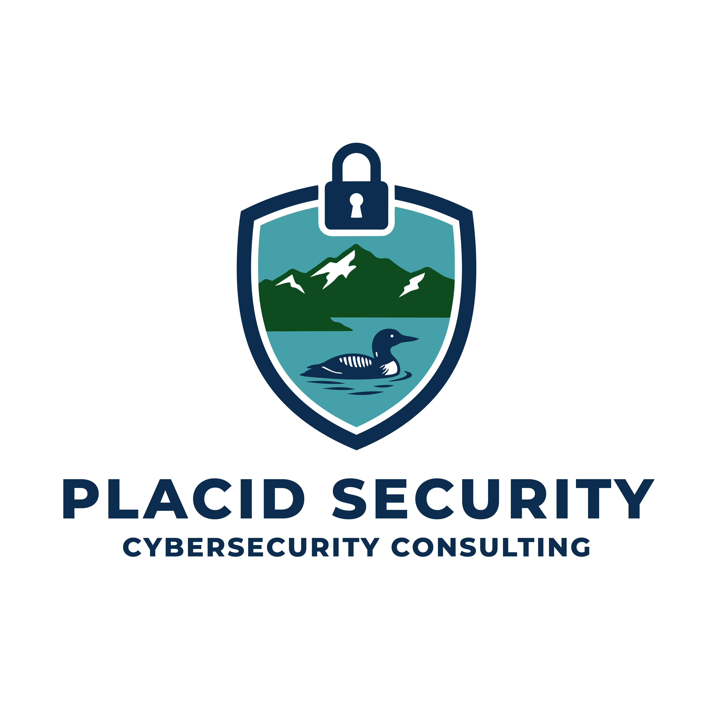

Kevin Geil is a cybersecurity practitioner with over 15 years of experience spanning offensive security, incident response, governance, risk, and compliance — and the organizational leadership that connects them. He holds the GIAC Security Expert (GSE) certification, one of the most rigorous credentials in the industry, along with the CISSP and a Master of Science in Information Security Engineering from the SANS Technology Institute.
Before founding Placid Security, Kevin served as Cybersecurity Services Manager at DeepSeas (formerly GreyCastle Security), leading a 12-person team across merged penetration testing practices. Prior to that, he spent 14 years as the first Information Security Officer for the New York State Olympic Regional Development Authority (ORDA), where he built and matured the organization's security program from the ground up — working in coordination with the NYS Chief Information Security Office.
Kevin has presented at the New York State Cybersecurity Conference and the North Country Cybersecurity Conference, and is the lead organizer of the North Country Cybersecurity Conference, now in its 7th year. He is also the author of two SANS Institute Reading Room publications.
The GIAC GSE is held by fewer than 400 people worldwide. It requires passing multiple advanced exams and a hands-on practical. It means something.
Every engagement is personally delivered by Kevin — not passed to junior analysts. You get the expertise you're paying for on every call and in every deliverable.
15+ years covering the full security spectrum: pen testing, IR, forensics, SIEM, vulnerability management, compliance, and executive advisory. Rare in a single practitioner.
No products to sell. No vendor relationships that shape recommendations. Advice is based on what's right for your organization.
Presentations
"The Joy of PowerShell for Information Security" — Half-day instructional session, NYS Cybersecurity Conference, 2024
"MFA Is Dead, Now What?" — North Country Cybersecurity Conference, 2022
"Information security as a catalyst for business success" — North Country Cybersecurity Conference, 2019
"Foundational SIEM Analysis" — Full-day instructional session, NYS Cyber Security Conference, 2019
Publications
"IT Service Management and Infosec: Collaborate for Mutual Success" — SANS Institute Reading Room, 2021
"OSSIM: CIS Critical Controls Assessment in a Windows Environment" — SANS Institute Reading Room (GCCC Gold Paper), 2017
Community Leadership
Lead Organizer, North Country Cybersecurity Conference — annual regional conference now in its 7th year.
Reach out to discuss your security needs. Every engagement starts with a conversation.
Get In Touch